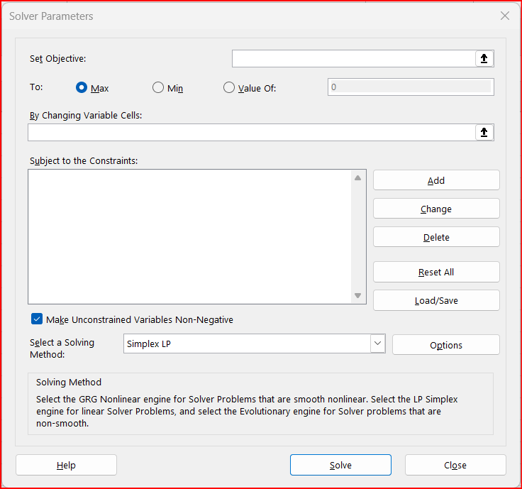

Procedure
- Set up an Excel sheet as shown in the picture below. We enter in the objective function and the constraints in tabular form as shown:

- Next we invoke the Solver Add-in: (Data -> Solver):

- We set up the Solver for our problem as follows: Hit the SOLVE button.

- Choose to have all the three kinds of Reports from Solver (Answers, Sensitivity, and Limits).

This will create three new tabs which give additional information on:
- How “centered” the solution is, or is it sensitive to variations of some parameters
- How much slack do the individual constraints still have, at the end
We will discuss this in class!
The complete Excel file is here for your reference.